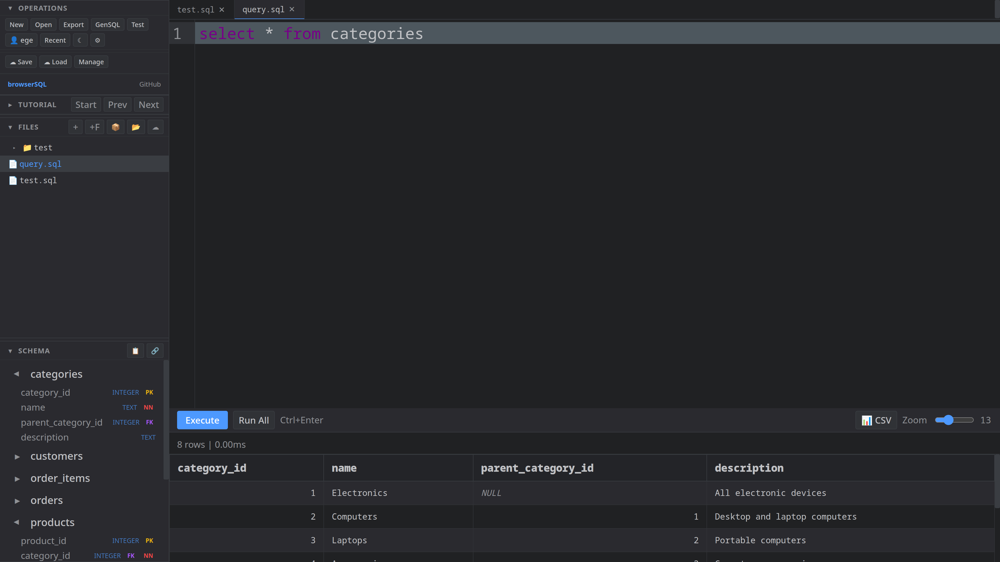

A fast, local-first SQL editor for the browser. Powered by SQLite compiled to WebAssembly — no server, no setup, just SQL.
Launch EditorSQLite runs directly in your browser via WebAssembly. No server round-trips, no latency — queries execute instantly.
Full tab completion for table names, columns, and SQL keywords. Dot-notation support — type table. and see every column.
Powered by CodeMirror 6. Full SQL syntax highlighting with dark and light themes that follow your system preference.
Create, rename, and organize SQL files. Switch between them with tabs. Files persist in your browser across sessions.
Click any table to view its DDL. Double-click to SELECT all rows. Right-click for query templates — SELECT, INSERT, UPDATE, DELETE.
Full editor on your phone with a custom toolbar for SQL symbols. Keyboard-aware — the toolbar sticks right above your virtual keyboard.
Export your database as a .sqlite file. Import existing databases. All done locally — your data never leaves your machine.
One-click test data: 6 related tables with customers, products, orders, and reviews — perfect for learning and prototyping.
Open files side-by-side with a resizable split editor. Right-click any file and select "Open to the Side" — like VS Code.
Describe what you need in plain English. The built-in AI generates SQL from natural language — no more Googling syntax.
Step-by-step lessons teach you SQL from scratch. Start with basic SELECTs, work up to window functions and CTEs.
Optional cloud backup for your databases and files. Login to save and restore your work across different devices.
Visualize your database schema with one click. See table relationships as an interactive diagram.
Click any table to instantly view its CREATE statement. Copy DDL, drop tables, or inspect column types at a glance.
Ctrl+Enter to execute, Ctrl+S to export, Ctrl+Space for autocomplete. Full keyboard-driven workflow.
Create and edit .md files with live preview. Great for writing documentation alongside your SQL queries.
Drag to resize every panel — sidebar, split editor divider, results height. Tweak the layout to match your workflow.
No cloud, no accounts, no telemetry. Your databases and queries stay entirely on your device. Privacy by design.
